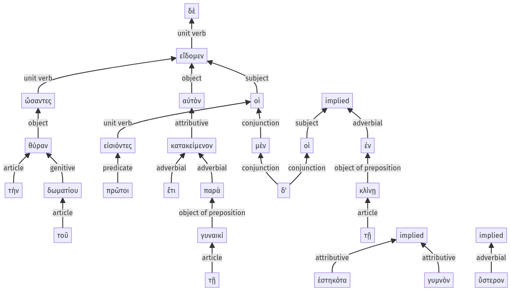

Lysias, Oration 1, 1.24.28-1.24.52a
1.24.1-1.24.11a |
Sentence 69
1.24.28-1.24.52a
ὤσαντες δὲ τὴν θύραν τοῦ δωματίου οἱ μὲν πρῶτοι εἰσιόντες ἔτι εἴδομεν αὐτὸν κατακείμενον παρὰ τῇ γυναικί, οἱ δ' ὕστερον ἐν τῇ κλίνῃ γυμνὸν ἑστηκότα.
2 ὤσαντες τὴν θύραν τοῦ δωματίου
2 οἱ μὲν πρῶτοι εἰσιόντες
1 ἔτι εἴδομεν αὐτὸν κατακείμενον παρὰ τῇ γυναικί
2 οἱ
1 δ'
2 ὕστερον
1 ἐν τῇ κλίνῃ γυμνὸν ἑστηκότα
ὤσαντες δὲ τὴν θύραν τοῦ δωματίου οἱ μὲν πρῶτοι εἰσιόντες ἔτι εἴδομεν αὐτὸν κατακείμενον παρὰ τῇ γυναικί, οἱ δ' ὕστερον ἐν τῇ κλίνῃ γυμνὸν ἑστηκότα.
Highlighting:
- connecting words
- unit verb
- subject
- object
Color code:
- independent clause (level 1, transitive verb)
- independent clause (level 1, transitive verb)
- circumstantial participle (level 2, transitive verb)
- attributive participle (level 2, intransitive verb)
- attributive participle (level 2, intransitive verb)
